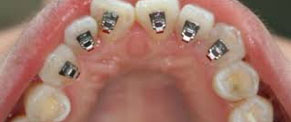

Who doesn’t want a straight, bright, beautiful smile? But not all are lucky to have the perfect teeth, and most of them are hesitant to wear braces that look like wires caging their anyways haphazard teeth. So what is the solution for these less fortunate? The answer is, Light Lingual Bracket.
The Light Lingual system, widely available with dental surgeons, clinics and hospitals in India, helps improve facial symmetry and appearance. For the esthetically conscious minds, concealed Lingual orthodontics is a blessed alternative to traditional braces. Patients can enjoy the process of orthodontia while still retaining a natural smile. Another popular option among patients desiring cosmetic orthodontics is a combination of upper concealed and lower clear braces.
Lingual philosophy was invented with the spirit to improve the quality and comfort of orthodontic treatment for the patient, allowing dentist to reach maximum occlusal aims, functional and aesthetic, without interfering with the private life of the patient. The Light Lingual bracket which lets the patient forget he is wearing a fixed appliance, not only when he looks in the mirror, but also when he speaks or cleans his teeth.
Light Lingual Brackets help in-
- Reduced dimension and rounded design
- The lowest bracket profile - 1.5 mm total thickness
- Minimal impact on tongue and speech
- Improved oral hygiene
Unique to Light Lingual brackets, STb has minimal impact on tongue position and speech. Clinic studies demonstrate negligible speech difficulty just after bonding, which disappears completely within a matter of days.